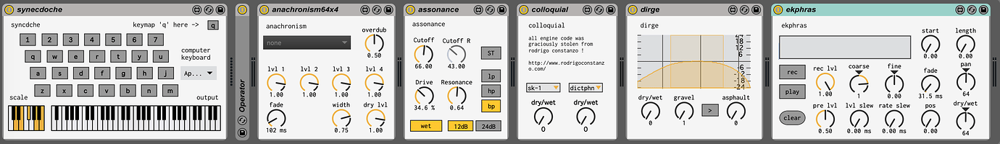

nest_
a UX library for monome devices
wrms
dual asyncronous time-wigglers / echo loopers for the monome norns sound computer
https://llllllll.co/t/wrms/28954

prosody
an evolving collection of open ended tools based in max for live.
https://github.com/AndrewShike/prosody
